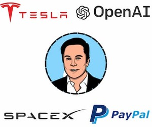

Карьерный путь: от Zip2 до Neuralink
- 💼 1996 — Сооснователь Zip2 (онлайн-карты для газет)
- 💸 1999 — Продажа Zip2 → стартовый капитал для X.com/PayPal
- 🚗 2004 — Инвестиции в Tesla → создание электромобилей
- 🌌 2008 — Первый контракт SpaceX с NASA ($1.6 млрд)
- 🧠 2016 — Основание Neuralink для нейротехнологий